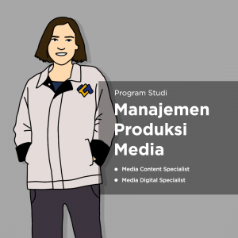

Program Studi Manajemen Produksi Media

Akreditasi : B
Menjadi Program Studi yang unggul dalam bidang Manajemen Produksi Media dan mampu bersaing di tingkat nasional, regional, maupun internasional pada tahun 2024.
- 1. Menyelanggarakan pendidikan bidang manajemen produksi media pada jenjang D4 yang berkualitas, profesional, dan beretika.
- 2. Mengembangkan riset terapan guna menopang pendidikan terapan dan teknologi bagi komunitas akademik, pemerintah, industri, dan masyarakat pada umumnya.
- 3. Menyelenggarakan pengabdian kepada masyarakat yang berkualitas dan mampu menyelesaikan masalah dalam bidang Manajemen Produksi Media.
- 4. Melaksanakan manajemen pendidikan terapan dengan mengutamakan prinsip penjaminan mutu (quality assurance) yang kredibel, transparan, akuntabel, bertanggung jawab, dan adil.
Tujuan Program Studi D IV Manajemen Produksi Media
- 1. Menyelenggarakan pendidikan komunikasi terapan yang mampu memenuhi tuntutan masyarakat pengguna jasa pendidikan tinggi.
- 2. Menghasilkan lulusan yang berdaya saing internasional dan sesuai. dengan tuntutan lapangan kerja dalam bidang komunikasi terapan.
- 3. Memperkuat dan mengembangkan jaringan kelembagaan ilmu komunikasi terapan dengan PTN dan PTS di tingkat nasional dan internasional.
- 4. Meningkatkan kualitas penyelenggaraan kegiatan akademik dan fasilitas penunjangnya.
- 5. Mengembangkan sumber daya manusia yang memiliki kompetensi dan kualifikasi yang mumpuni baik secara jasmani dan rohani.
- 6. Mengembangkan kemampuan mahasiswa melalui peningkatan kuantitias dan kualitas kegiatan kemahasiswaan.
- 1. Media Content Spesialist
- 2. Media Digital Spesialist
Jl. Raya Bandung Sumedang KM 21
Kecamatan Jatinangor Kabupaten Sumedang
Jawa Barat 45363
022-7796954
sekretariat.fikom@unpad.ac.id cc sekdekfikomunpad@yahoo.com
Senin - Jumat: 8:00 AM - 4:00 PM